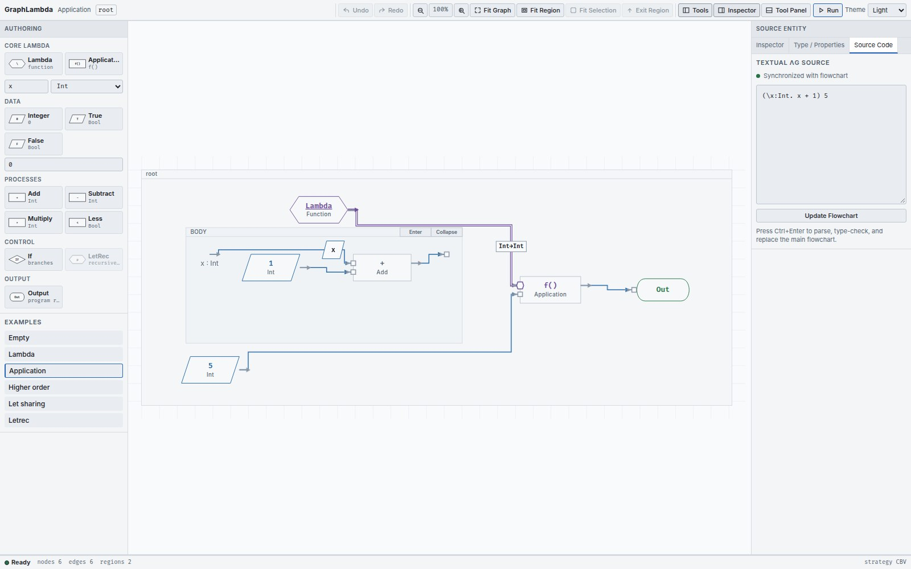

Write λG, then update the graph
The Source Code tab provides a textual view of the graph and a draft editor. A successful update installs a newly compiled graph; merely typing does not change the running program.
Use Update Flowchart


- Close any open run and choose Source Code in the right Inspector.
- Enter a complete expression. The draft status indicates whether the text is synchronized with the flowchart.
- Select Update Flowchart , or press Ctrl+Enter / Cmd+Enter in the field.
- On success, the new graph appears at its root with a fresh layout and selection. Use Undo to restore the previous document.
Parse or type errors leave the installed graph unchanged and display diagnostics beside the draft. Correct the draft and submit it again.
The surface syntax
| Form | Example |
|---|---|
| Integer and Boolean |
42
,
true
,
false
|
| Lambda with annotated parameter |
\x : Int . x + 1
|
| Application by juxtaposition |
(\x : Int . x + 1) 5
|
| Ordinary sharing |
let x = 10 + 20 in x * x
|
| Conditional |
if 2 < 3 then 10 else 20
|
| Recursive function |
letrec f : Int -> Int = \x : Int . x in f 5
|
| Primitive operators |
+
,
-
,
*
,
<
|
Use a backslash for Lambda, a colon before its parameter type and a dot before its body. Parentheses group expressions and function types. An ordinary let binder is available in its body, but not its initializer; a letrec binder is available in both.
Try factorial
letrec fact : Int -> Int =
\n : Int . if n < 1 then 1 else n * fact (n - 1)
in fact 5
Update the flowchart, then Run to End. The final value is
120
. The definition must be a Lambda of the declared function type. An arbitrary cyclic graph is not a substitute for LetRec.
Read graph changes as code
The textual projection follows the executable expression rooted at Output. A shared producer is represented with an explicit let, so reading the text does not turn sharing into duplicated work. Generated binder names and formatting need not preserve the exact characters originally typed.
A graph with missing required inputs or no single root Output cannot provide a complete executable text projection. Finish the graph, or use a complete text draft to replace it. Successful text replacement creates a new graph; source identities are not promised to survive that replacement.
Keep your program text
The current editor has no file-open / file-save controls for programs. Copy your complete λG text to a file you keep, then paste it back and use Update Flowchart when needed. Do this before reloading or replacing a document with another example.
The saved theme preference is separate from program persistence. A copied expression preserves the program you can recompile; it does not preserve node positions, source identities or debugger history.